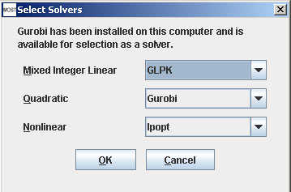

Help Topics
- Load SBML
- Load CSV
- Load Excel Spreadsheets
- Load from Model Collection
- Saving Files
- Clear Tables
- Exit
- Select Solvers
- Set Solver Parameters
Select Solvers
Mixed Integer Linear Program (MILP) solvers are used for FBA, GDBB, and E-Flux2. Quadratic solvers are used for E-Flux2, and Nonlinear solver is used for SPOT (Simplified Pearson cOrrelation with Transcriptomic data). Gurobi or GLPK (GNU Linear Programming Kit) are available as MILP solvers, Gurobi and Ipopt (Interior Point OPTimizer) are available as Quadratic solvers, and Ipopt is available as a Nonlinear solver.
Click Options -> Select Solvers (Alt+O then Alt+S) to select solvers for running Analyses. The Select Solvers dialog will appear.

The combo boxes boxes and buttons on the Select Solvers dialog can all be accessed using keyboard shortcuts by using Alt+ and underlined letter.
Example: Quadratic (Alt+ Q)
If Gurobi is installed and the version is 5.6.2 or better, Gurobi will be selected in the Select Solver dialog for Mixed Integer Linear and Quadratic Solvers. Otherwise, a solver that is included in MOST will be selected.
Gurobi jar file and license can be downloaded at the Gurobi site www.gurobi.com. It is important that the installation instructions given on the Gurobi site for your operating system are followed, so that the Gurobi native-code library and Gurobi JNI library can be found by MOST. See Known Issues.
If 32 bit Java is being run, the Gurobi jar file must also be 32 bit.
If your Gurobi license is not valid, the following error will appear:

Your Gurobi license needs to be updated or refreshed.